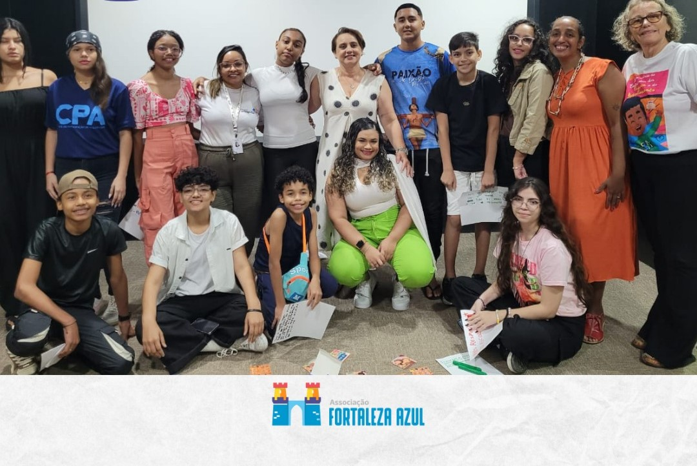
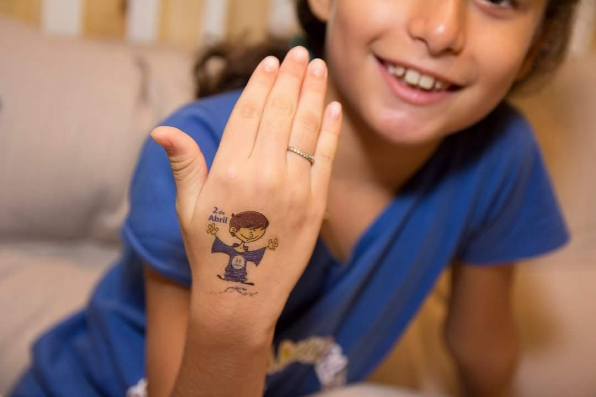

Um pouco sobre a associação
Somos uma instituição sem fins lucrativos em Fortaleza que presta assistência social, apoio e terapia a crianças com autismo e seus familiares. Ela oferece serviços como fonoaudiologia e psicomotricidade para suprir a demanda onde o SUS não consegue atender e também trabalha na defesa dos direitos das pessoas autistas.
A FAZ oferece serviços essenciais como fonoaudiologia e psicomotricidade, buscando suprir a demanda e garantir a inclusão e o desenvolvimento pleno de autistas e o acolhimento de suas famílias.
A FAZ é regida por seu estatuto e busca a transparência total em suas ações e finanças. Atualmente, a instituição conta com centenas de famílias associadas.
Conheça nossa história e objetivosNosso Público-Alvo e a Importância das Parcerias Estratégicas
O foco principal da Associação Fortaleza Azul (FAZ) são as pessoas com Transtorno do Espectro Autista (TEA) e, de forma inseparável, suas famílias. Nossa atuação começa no acolhimento e suporte direto a este núcleo familiar, oferecendo um ambiente onde possam encontrar informação, compartilhar experiências e acessar serviços essenciais.
Entendemos que a jornada do autismo exige uma rede de apoio robusta. Por isso, a FAZ estende seus esforços a um público mais amplo, dirigindo-se a profissionais da área de saúde, educação e assistência social. Buscamos ativamente parcerias com professores, estudantes e outras organizações.
O objetivo dessas alianças é duplo: garantir que as pessoas autistas, incluindo as famílias de baixa renda e aquelas com necessidades especiais em geral, tenham acesso a terapias e direitos, e fortalecer a conscientização na sociedade civil. Trabalhamos para que a inclusão seja uma realidade em escolas, ambientes de trabalho e espaços públicos, construindo uma verdadeira "fortaleza" de apoio e defesa dos direitos em Fortaleza e no Ceará.

Voluntariado
Doe seu tempo e suas habilidades! A FAZ busca constantemente profissionais voluntários para atuar nas terapias e no suporte às famílias.
Profissionais Requeridos:
-
Psicopedagogos
Ajuda crucial no desenvolvimento cognitivo e processos de aprendizagem dos assistidos. ajude os autistas a desenvolverem estratégias para a aprendizagem (como foco, memória e raciocínio), promoverem a comunicação e interação social, desenvolverem a autonomia, e darem apoio à família e à escola.
-
Psicólogos
Oferece suporte emocional e orientação para as famílias e os indivíduos com TEA. utilizando terapias como a ABA (Análise do Comportamento Aplicada) para ensinar habilidades sociais e de comunicação, além de auxiliar na redução de comportamentos desafiadores.
-
Fonoaudiólogos
Atua na melhoria da comunicação, linguagem e habilidades sociais essenciais. melhorar a comunicação e outras habilidades através do desenvolvimento da fala, da linguagem oral e não verbal, da compreensão social e de funções motoras como deglutição e mastigação.
-
Terapeutas Ocupacionais
Auxilia na autonomia e no desempenho das atividades diárias dos autistas. ajudando assim a desenvolverem habilidades para aumentar a independência e qualidade de vida, trabalhando em áreas como habilidades da vida diária (higiene, alimentação, vestir-se), habilidades motoras (finas e grossas), integração sensorial (adaptação a estímulos) e habilidades sociais (interação e comunicação).
-
Musicoterapeutas
Utiliza a música como ferramenta terapêutica para comunicação e expressão. Alem de melhorar a comunicação e a socialização por meio de atividades musicais, eles também auxiliam na regulação sensorial e emocional, reduzindo a ansiedade e comportamentos desafiadores.
como podemos ajudar você?
A FAZ trabalha em diversas frentes para garantir a qualidade de vida e os direitos das pessoas autistas. Aqui estão alguns dos nossos benefícios e serviços:
-
Fonoaudiologia
A FAZ oferece, por meio de seus projetos (como o "Acolher" e "Teamar") e em parceria com profissionais de saúde e clínicas, atendimentos fonoaudiológicos gratuitos ou a valor social para pessoas com TEA e suas famílias.
-
Programas de Terapia
A Associação Fortaleza Azul (FAZ) oferece programas de terapia gratuitos, como fonoaudiologia, terapia ocupacional e psicomotricidade, para crianças com Transtorno do Espectro Autista (TEA).
-
Psicomotricidade
contribui para a melhoria das habilidades motoras, a promoção da interação social, o desenvolvimento emocional e a autonomia. A abordagem psicomotora também demonstra ser uma ferramenta terapêutica eficaz, capaz de proporcionar melhorias na qualidade de vida e bem-estar das crianças com autismo.
-
Defesa dos Direitos
A FAZ promove a defesa dos interesses e direitos protegidos dos seus associados, tanto na esfera judicial quanto extrajudicial, conforme previsto em seu estatuto.A associação também firmou uma parceria com o Núcleo de Direitos Humanos e Ações Coletivas (NDHAC) da Defensoria Pública do Estado do Ceará (DPCE). Isso permite oferecer atendimento gratuito e orientação jurídica a famílias (associadas ou não) que necessitam de apoio em áreas como saúde e educação.
-
E muito mais

Doação de Itens e Bazar FAZ BEM
Realizamos periodicamente o Bazar FAZ BEM para arrecadar fundos e manter os atendimentos. Você pode ajudar doando itens em bom estado:
- Roupas de adultos e infantil.
- Calçados, bolsas e acessórios.
- Brinquedos, eletrodomésticos e utensílios domésticos.
- Carrinho de bebê e outros materiais.
Para agendar a coleta ou entrega da sua doação, entre em contato com a nossa equipe.